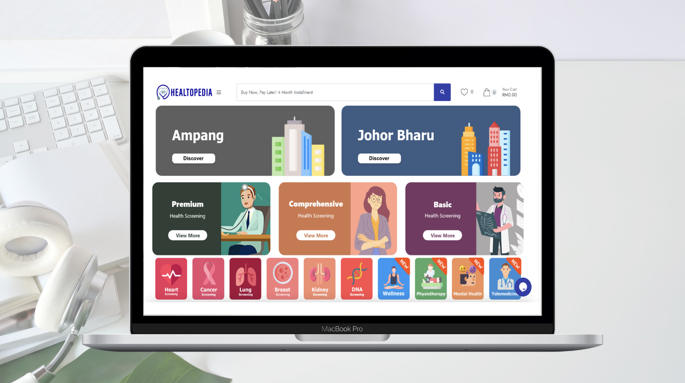
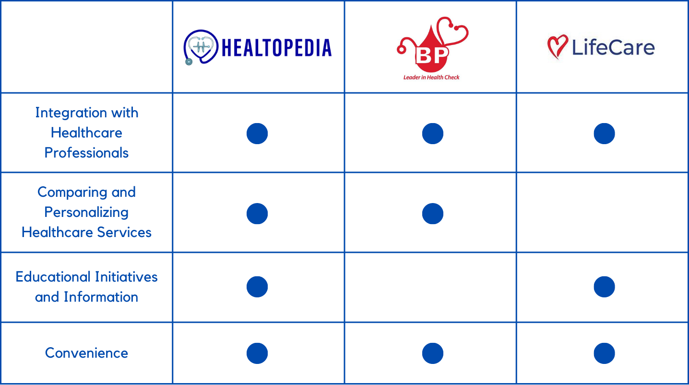
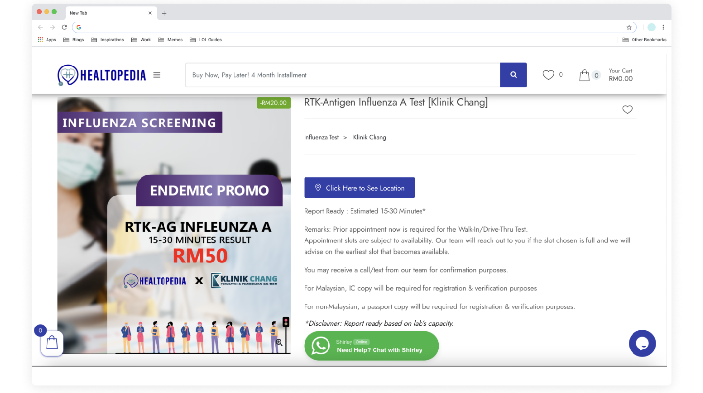
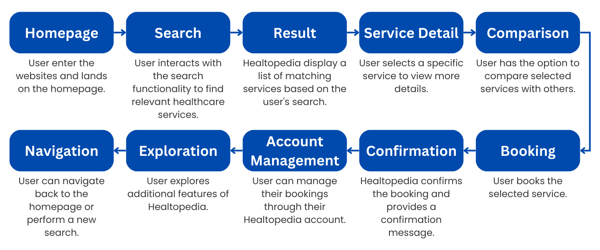
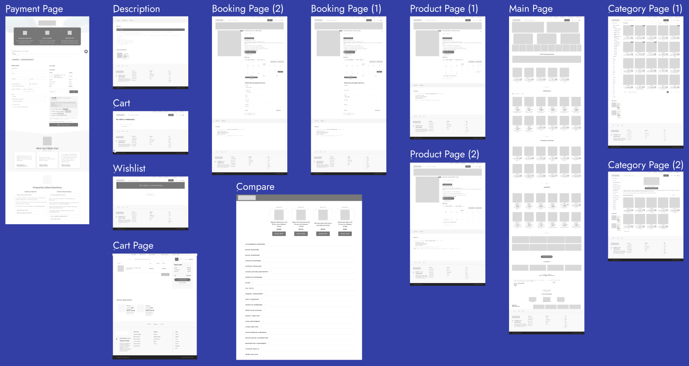
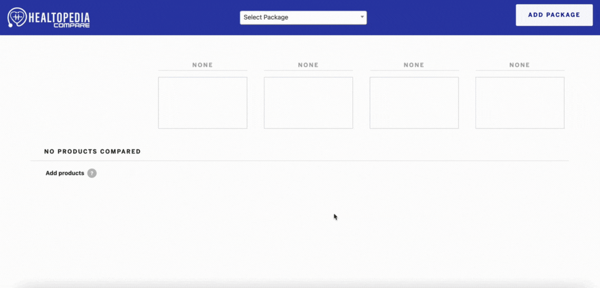
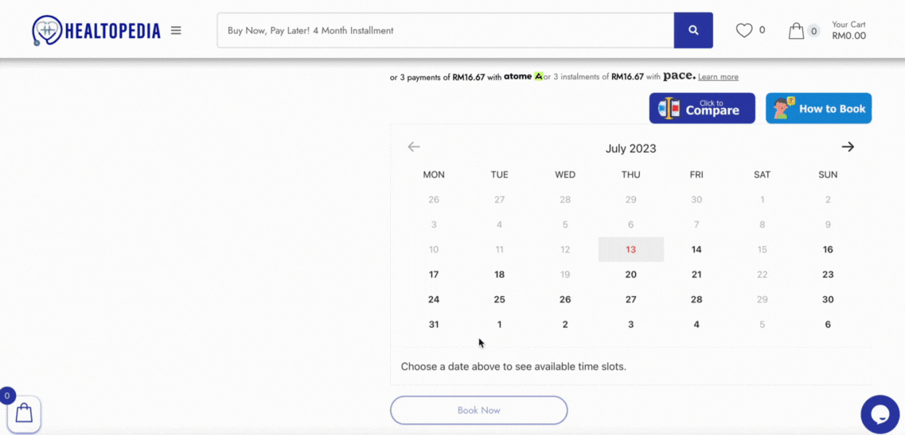
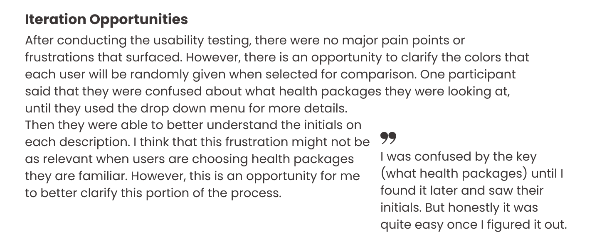

challenge
The low level of health literacy in Malaysia created barriers to accessing appropriate healthcare services and limited individuals' ability to make informed decisions about their well-being, while the lack of comprehensive information and the inability to compare multiple healthcare services on existing online platforms further exacerbated the inefficiencies in making plans or switching healthcare services.
Solution
The solution addressed the low level of health literacy in Malaysia by implementing educational initiatives and enhancing the online healthcare provider platform to allow users to compare and choose healthcare services efficiently.
Design Process

Empathize
To better understand the current market and needs of Healtopedia, I utilized two research methods: User Surveys and user interviews.
Research goal: To develop an understanding of the current user experience of Healtopedia and identify any pain points or frustrations.
1. User Surveys: Conducting surveys among the target user groups to gather insights on their healthcare needs, preferences, and challenges. This can provide valuable data to inform the design and functionality of Healtopedia.
2. User Interviews: Conducting in-depth interviews with users to gain a deeper understanding of their experiences, expectations, and pain points related to healthcare management.
1.0 COMPETITIVE ANALYSIS
After conducting a thorough analysis of competitors, I discovered that Healtopedia stands out as a highly unique app in the market. I couldn't identify any direct competitors offering similar capabilities. This finding indicates a promising opportunity for Healtopedia to establish itself as a distinct and innovative solution in the industry.

1.1 USER INTERVIEWS AND FINDINGS
Now that I had a better understanding of the current market, I wanted to better understand the current users of booking healthcare websites. I conducted interviews with participants about their experience with other booking healthcare websites. All participants were between the ages of 25 and 55. After I conducted the interviews, this is what i found :
1.1.0 PROBLEM 1 : Low level of health literacy in Malaysia
The low level of health literacy in Malaysia hindered individuals' ability to understand and manage their health effectively, resulting in barriers to accessing appropriate healthcare services.
1.1.1 PROBLEM 2 : Existing online healthcare providers
Existing online healthcare providers faced challenges due to limited information about healthcare packages, the inability to compare multiple healthcare services simultaneously, and the resulting inefficiencies when making decisions.
Define
2.0 User Flow
Based on the data that was collected, I brainstormed, compiled and organized the current features and new feature into a user flow.

2.1 User Journey
Creating a user journey allowed me to articulate the intended benefits and outcomes for our users in relation to the web app's features.

Ideate
3.0 WIREFRAMES
Once the sitemap and user journey were defined, I proceeded to design low-fidelity wireframes to visualize the app's interface.

Prototype
4.0 Discover
Discover a range of health screening services and packages offered by different hospitals on the website, and find the ones that suit your preferences.
4.1 Compare
If you find yourself overwhelmed with options, utilize our convenient Comparison feature to compare the details and services offered in multiple health screenings.

4.2 Informed
Get informed with valuable Health Tips & Information, and explore comprehensive Service Descriptions and health package details provided by Healtopedia to enhance your knowledge and well-being.
4.3 Book
Our user-friendly interface will guide you through a simple step-by-step process to select your preferred date and time, make secure payments, and confirm your booking seamlessly.

Test
5.0 USABILITY TESTING
Once the high-fidelity prototype was completed, I prepared a usability test guide and recruited participants who were existing users of Healtopedia.
Research goal: To develop an understanding of the current user experience of Healtopedia and identify any pain points or frustrations.

Future Considerations
6.0 CALENDAR INTEGRATION
Through my initial research, a significant insight emerged: integrating Healtopedia with popular calendar apps like Google Calendar or iCalendar presents an opportunity to streamline the process for users managing their booking and selecting suitable healthcare services. Currently, users need to manually add their booking details to both Healtopedia and their personal calendars for each doctor's visit, leading to unnecessary duplication of effort.
By seamlessly synchronizing the appointments entered in Healtopedia with their Google Calendars or iCalendars, users can save time and enhance scheduling efficiency. This solution aligns with the broader objectives of addressing Malaysia's low health literacy, empowering users to make informed healthcare decisions, and mitigating the limitations faced by existing online healthcare providers.